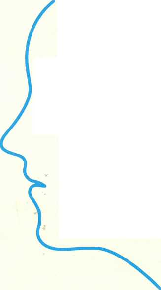
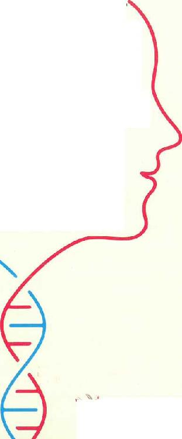

Çeviren: Mine Madenoğlu

Hv Sola Unit a s
happiness.learning.performance
Seninle Başlamadı
KALITSAL AİLE TRAVMALARININ KİM OLDUĞUMUZA ETKİLERİ VE SORUNLARIN ÜSTESİNDEN GELEBİLMENİN YOLLARI
Mark Wolynn